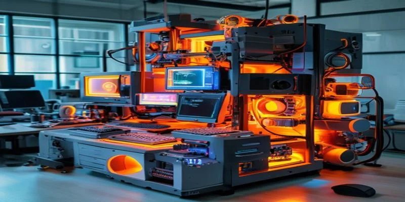

AI 員工（Agent）最近幾個月瘋狂成長，有些 repo 甚至已經包山包海地提供超過 120 個 Agent 橫跨各種系統。根據 Belitsoft 的預測，2025 年 AI Agent 市場規模達 80 億美元，2026 年預計成長至 118 億美元，年複合成長率高達 46.61%。這種爆炸性成長的背後，有一個關鍵問題值得我們停下來思考。
AI Agent 確實可以提高工作效率，但他很有可能造成類似 Rube Goldberg machine（魯布·戈德堡機械）的化簡為繁的反效果。

魯布·戈德堡機械是一種刻意過度設計的裝置，以極度複雜的方式完成極為簡單的任務——這個比喻，正精準地描述了當今許多企業的 AI 導入現狀。許多經驗豐富的技術領導者和專家，仍不斷地將時間與預算投入到這種精心設計的複雜系統之中，彷彿越複雜的架構就越顯得聰明，殊不知真正的簡潔才是更高的境界。
Token 浪費：已被數據證實的代價
如果大家只是拼命的利用 Agent 而不管彼此的合作，那巨幅浪費 token 是一定會發生。已經有許多公司在 2026 Q1 花費上百萬美元的 token，而做出的效果卻沒有想像中的好。
這一現象有個專有名詞，叫做「Tokenmaxxing」——公司把消耗 token 的數量當成員工 AI 生產力的衡量標準，鼓勵工程師拚命使用 AI 工具。結果走火入魔：Amazon 的部分員工甚至讓 AI 去執行毫無意義或不必要的任務，只為了拉高 token 使用統計數字，因為管理層已將此作為評估員工績效的指標。
事實上，Agentic AI 工具（能自主執行多步驟任務的 AI）所消耗的 token 量，是直接查詢大型語言模型的 1000 倍以上。這意味著，一個未經妥善設計的 Agent 工作流，可能在短時間內燒掉驚人的成本。
真實案例不斷浮現：Uber 宣布在 2026 年僅前四個月就燒光了全年的 token 預算，部分原因是 Claude Code 的高度使用；Salesforce 執行長 Marc Benioff 則表示，今年的 Anthropic 帳單將高達約 3 億美元。最終，Meta 撤下了員工自發建立的 Tokenmaxxing 排行榜；Microsoft 也在多個核心產品部門取消了 Claude Code 的訂閱；Uber CEO 明確表示，Tokenmaxxing 與實際出貨任何有價值的成果之間，並沒有關聯。
這背後的原因在於，隨便花費 token 容易，但如果沒有朝向整體化設計，那效果會很糟。企業高層真正在意的不是每個 token 的成本，而是每個「結果」的成本。那些將衡量指標對準業務成果的組織，表現遠優於那些只優化推論效率的組織。
企業其實要的是「純AI運營的系統」
企業，特別是新創公司，其實要的是「純AI運營的系統」，而不是每個地方有一個更好用的 AI Agent。
如果說 2025 年是企業學習「用 AI 建造」的一年，那 2026 年就是企業學習「以 AI 原生方式運營」的一年。AI 不再只是輔助人類工作的工具，它正成為企業運營中的自主參與者。這種轉變，要求的不只是多採購幾個 AI 工具，而是整個企業架構思維的根本重塑。
然而，Gartner 預警，超過 40% 的 Agentic AI 項目有在 2027 年前被叫停的風險；目前只有 21% 的組織對自主 AI 代理擁有成熟的治理模型。問題的核心不在技術，而在於許多企業只是在舊有流程上貼了一層 AI，而非從零開始重新思考作業系統的設計。
到目前為止，「純AI運營的系統」還是需要經過妥善設計的以及擁有領域背景，智人週刊 就是一個典型範例。雜誌週刊公司，是一個從 1605 年開始就有的出版業。他的作業流程從 1760 就幾乎定型沒有改變：
- 邀稿與撰寫
- 手工排版（無論是手工還是電腦）
- 圖像製作（無論是木刻版圖、油墨印刷還是電腦製圖）
- 印刷（無論是哪種印刷技術，或者只是編排在 PDF 特定位置）
- 裝訂與發行（無論是傳統送信，還是用 email）
這五件事情已經三百年沒有改變，即使是有電腦網路，也只是加快速度而已。這正說明了一件事：流程的本質沒變，只是工具換了。如果 AI 只是被當成「更快的工具」插進舊流程，那它終究只是加速了一個三百年前設計的系統，而非真正的蛻變。
但是，「純AI運營的系統」可以讓整個過程翻轉！例如，撰寫與圖像製作可以先行完成、可以先行審閱，而且編排印刷與發行可以同時進行不同 AI 製作的版本。
更重要的是，每個階段都可以由「總編輯」校稿修正。成功的 AI 原生組織，是那些將 AI 視為業務運營核心設計原則的組織，而不只是把 AI 作為提升效率的附加工具。「總編輯」這個角色，正是系統中保持人類判斷力與品質把關的關鍵節點——它不是取代 AI，而是讓整個系統在自動化與問責之間保持健康的張力。
結語
2026 年，競爭優勢不屬於擁有最先進模型的公司，而是屬於那些在 AI 調度上最具經濟紀律的公司。衡量 token 消耗量的組織會停滯不前；衡量業務成果的組織才能持續擴張。
或許我們都應該想想，我們需要的是「純AI運作企業」還是僅僅只是更多的 AI 員工？一個設計精良、朝向整體化的 AI 運營系統，遠比一百個各自為政的 AI Agent，更能帶來真正的競爭優勢。